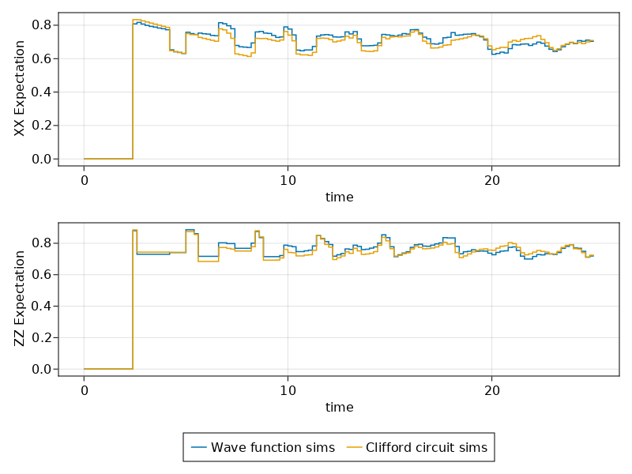

Clifford Simulations of First Generation Quantum Repeater
Here we will simulate a quantum repeater by employing a noisy Clifford circuit simulator.
Be sure to check out the more detailed tutorial on wavefunction simulations of First Generation Quantum Repeater before proceeding with this one.
The changes we need to perform to the code are incredibly small. We only change the way the initial states of the entangled pairs are set, without changing any of the code implementing the swapping and purification steps.
For the wavefunction simulator we had used:
const perfect_pair = (Z1⊗Z1 + Z2⊗Z2) / sqrt(2)
const perfect_pair_dm = SProjector(perfect_pair)
const mixed_dm = MixedState(perfect_pair_dm)
noisy_pair_func(F) = F*perfect_pair_dm + (1-F)*mixed_dmHere we switch to tableau representation for our initial states. Converting from tableaux to kets or density matrices is cheap and automated, but the reverse direction is difficult, thus we give the initial state explicitly. You can actually use the tableau definition below for all types of simulations (tableau, ket, others).
# a tableau corresponding to a Bell pair
const tableau = S"XX
ZZ"
const stab_perfect_pair = StabilizerState(tableau)
const stab_perfect_pair_dm = SProjector(stab_perfect_pair)
stab_noisy_pair_func(F) = F*stab_perfect_pair_dm + (1-F)*mixed_dmWe then use that in the entangler setup (the same way we used a similar function when we were doing wavefunction simulations), simply by selecting the appropriate default representation type (CliffordRepr instead of QuantumOpticsRepr):
# exerpt from `firstgenrepeater-firstgenrepeater-clifford.jl`
sim, network = simulation_setup(sizes, T2; representation = CliffordRepr)
noisy_pair = stab_noisy_pair_func(F)The symbolic-expression-to-density-matrix conversion is cached inside of the symbolic expression noisy_pair, so that it does not need to be recomputed each time. In particular, given that this arbitrary mixed state can not be represented as a tableau, rather as a probability distribution over different tableaux, the cache provides for efficient random sampling.
Converting from tableaux to kets or density matrices is cheap and automated, so we could have just as well used stab_noisy_pair_func even with the Schroedinger simulations of QuantumOpticsRepr.
Simulation Trace
Similarly to the wavefunction simulations from the previous tutorial, here we can see how the various observables evolve over time for a Clifford-base simulation. Notice that unlike the wavefunction simulation, the results are very discrete, and we will certainly need to average over multiple repeated simulations of this trajectory.
Comparison Against a Wavefunction-based Simulations
We can run the either simulation multiple times in order to compare the results from the wavefunction and tableau-based simulations:

Full Code
The entirety of the code necessary for reproducing these results is in the examples folder of the QuantumSavory.jl repository.